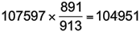

Autres ajustements des séries chronologiques
Beaucoup de séries chronologiques d'affichage des effets de plus d'une variable change au fil du temps. Par exemple, les changements dans le prix d'un article NZ provenant des Etats-Unis tiendront compte des changements dans la NZ$ / US$ taux de change ainsi que des changements dans le prix de US$.
Si un index est disponible qui mesure l'effet d'une telle variable, puis son effet peut être éliminé par un processus de dégonflement. L'idée est similaire à celle de l'annulation de tendance ou de deseasonalising une série chronologique.
Si Xi représente la valeur des séries temporelles à tout moment i et Ni et N0 désignent les valeurs de l'indice au temps i et le temps de base, respectivement, puis la valeur déflatée Di est donnée par

Correction de l'inflation
Ce type d'ajustement est souvent utilisée pour tenir compte de l'inflation. Bien qu'il soit intéressant de savoir que Tarakihi coût $25.43 par kg en 2008 mais seulement $19.20 par kg en 2005, soit une hausse de prix n'est guère surprenant lorsque les salaires et tous les autres prix ont augmenté dans cette période.
L'Indice des prix à la consommation (IPC) est souvent utilisé pour ajuster à l'inflation. Comme l'IPC était de 953 en 2005 et 1044 en 2008 (basé sur un IPC de 1000 à Juin 2006), le prix du Tarakihi en 2008 peut être exprimée en «dollars de 2005» comme suit:

En dollars de 2005, le prix du Tarakihi a augmenté de $19.20 en 2005 à $23.21 en 2008.
Nouvelle-Zélande Produit intérieur brut
Le tableau ci-dessous montre la Nouvelle-Zélande produit intérieur brut de 2002 à 2008 en collaboration avec l'IPC (Source: site Web Statistics NZ). Notez que l'IPC utilise un facteur de 1000 au lieu de 100 et a un quart de base de Juin 2006.
| Nouvelle-Zélande, le PIB (en millions $) et IPC | |||||||
|---|---|---|---|---|---|---|---|
| 2002 | 2003 | 2004 | 2005 | 2006 | 2007 | 2008 | |
| PIB | 101,794 | 107,597 | 115,678 | 122,337 | 127,444 | 133,642 | 143,496 |
| IPC | 891 | 913 | 928 | 953 | 985 | 1010 | 1044 |
Pour dégonfler les valeurs du PIB, nous allons utiliser la première année (2002), notre année de référence pour exprimer les valeurs déflatées que "2002 dollars". (Il n'a pas besoin d'être la même année de base qui a été utilisé pour calculer l'IPC.) La valeur du PIB pour 2003 est dégonflé

Toutes les valeurs déflatées PIB sont présentés dans le tableau ci-dessous
| Nouvelle-Zélande, le PIB (en millions $) en dollars de 2002 | |||||||
|---|---|---|---|---|---|---|---|
| 2002 | 2003 | 2004 | 2005 | 2006 | 2007 | 2008 | |
| PIB | 101,794 | 107,597 | 115,678 | 122,337 | 127,444 | 133,642 | 143,496 |
| Déflaté du PIB | 101,794 | 104,951 | 111,113 | 114,331 | 115,281 | 117,898 | 122,468 |
Ainsi, bien que premières PIB a augmenté de près de $43 millions de 2002 à 2008, l'augmentation dégonflé (c'est à dire éliminer les effets de l'inflation) a été un peu moins de $21 million.
Le graphique chronologique ci-dessous illustre la différence entre les variations du PIB premières et ajusté.
Notez comment le PIB corrigé des variations aplati entre 2005 et 2006, indiquant des problèmes de l'économie à cette époque.